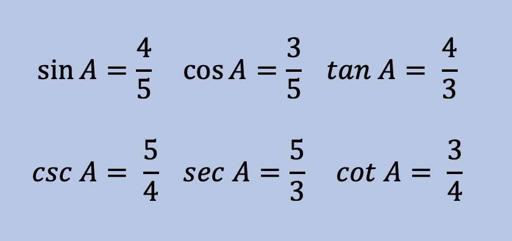

In previous math courses, three trigonometry functions were introduced: the Sine, Cosine, and Tangent Functions. There are six Trigonometric Functions total. In this module we will cover the other three: Cosecant, Secant, and Cotangent.
You may remember SOH-CAH-TOA, which was used to help you remember the formulas for Sine, Cosine, and Tangent. The Cosecant, Secant, and Cotangent Functions are the reciprocals of the original three functions, as shown below.
Each function works the same way; solving for unknown side lengths and unknown angle degrees in Right Triangles. But in Pre-Calculus and above, these functions will be used without triangles present. You will learn how to graph these functions in Pre-Calculus. This unit is just an introductory to the functions and how they work.
Example: Given the triangle ABC, fill in the values of the six trig functions.
Solution:
Notice each function and its corresponding function are just reciprocals of eachother. Once you have the sin, cos, and tan values filled in, just take the reciprocal. Leave the left-hand side of the equation alone.
Example: Given the triangle ABC, fill in the values of the six trig functions.
Solution:

Now you try:
Given the triangle ABC, fill in the values of the six trig functions.
sin A = cos A = tan A = csc A = sec A = cot A =